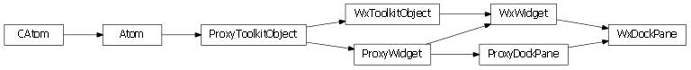

DockPane¶
- class enaml.widgets.dock_pane.DockPane(parent=None, **kwargs)[source]¶
Bases: enaml.widgets.widget.Widget
A widget which can be docked in a MainWindow.
A DockPane is a widget which can be docked in designated dock areas in a MainWindow. It can have at most a single child widget which is an instance of Container.
- title¶
The title to use in the title bar.
- title_bar_visible¶
Whether or not the title bar is visible.
- title_bar_orientation¶
The orientation of the title bar.
- closable¶
Whether or not the dock pane is closable via a close button.
- movable¶
Whether or not the dock pane is movable by the user.
- floatable¶
Whether or not the dock can be floated as a separate window.
- floating¶
A boolean indicating whether or not the dock pane is floating.
- dock_area¶
The dock area in the MainWindow where the pane is docked.
- allowed_dock_areas¶
The dock areas in the MainWindow where the pane can be docked by the user. Note that this does not preclude the pane from being docked programmatically via the ‘dock_area’ attribute.
- closed¶
An event fired when the user closes the pane by clicking on the dock pane’s close button.
- proxy¶
A reference to the ProxyDockPane object.
Backends¶
Qt¶

- class enaml.qt.qt_dock_pane.QtDockPane[source]¶
Bases: enaml.qt.qt_widget.QtWidget, enaml.widgets.dock_pane.ProxyDockPane
A Qt implementation of an Enaml ProxyDockPane.
- widget¶
A reference tot he widget created by the proxy.
- dock_widget()[source]¶
Find and return the dock widget child for this widget.
Returns: result (QWidget or None) – The dock widget defined for this widget, or None if one is not defined.
Wx¶

- class enaml.wx.wx_dock_pane.WxDockPane[source]¶
Bases: enaml.wx.wx_widget.WxWidget, enaml.widgets.dock_pane.ProxyDockPane
A Wx implementation of an Enaml ProxyDockPane.
- widget¶
A reference tot he widget created by the proxy.
- dock_widget()[source]¶
Find and return the dock widget child for this widget.
Returns: result (wxWindow or None) – The dock widget defined for this widget, or None if one is not defined.
An overridden visibility setter which to opens|closes the dock pane.